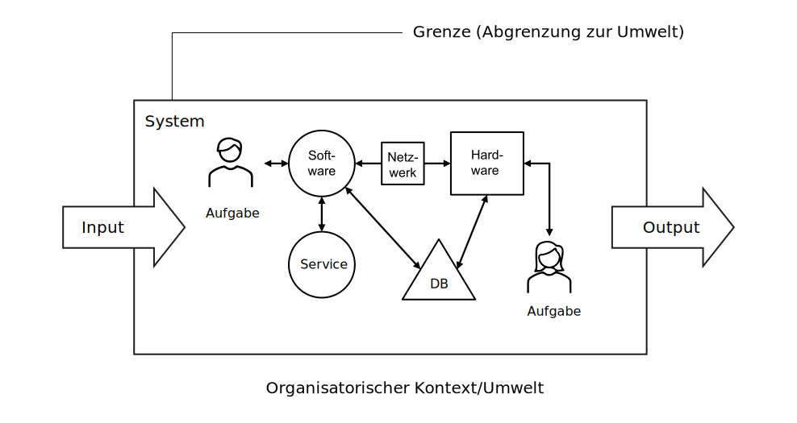
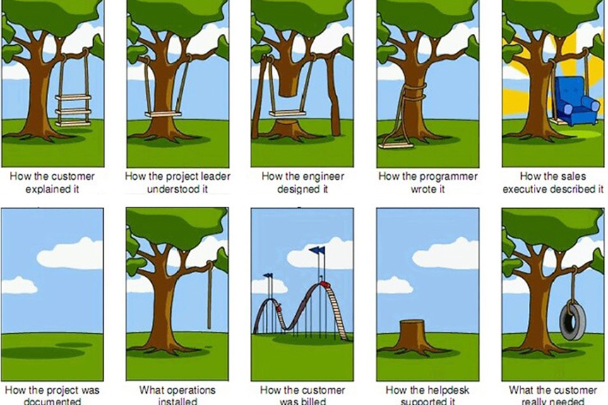
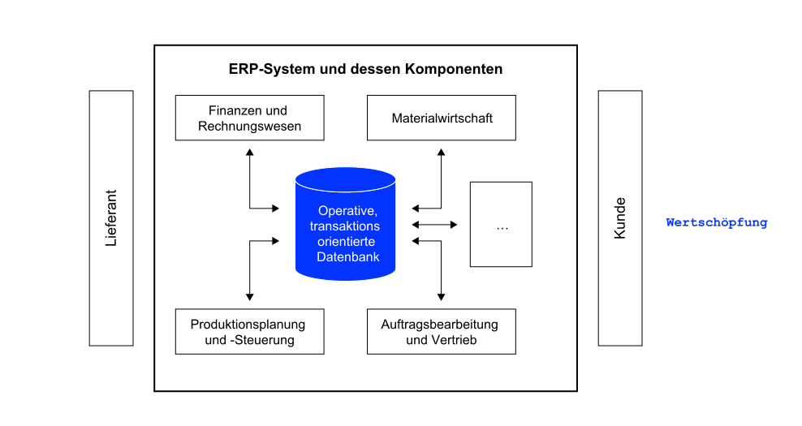
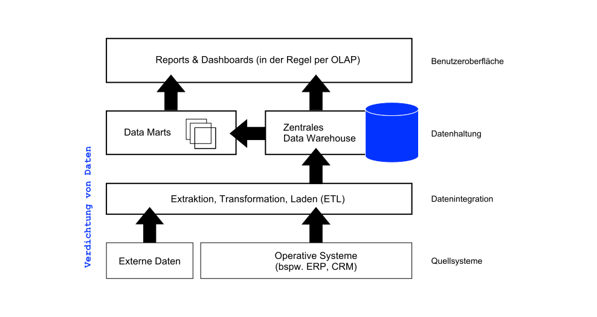

K6 Anwendungssysteme
Grundzüge Informationsmanagement (GIM)
Andy Weeger
University of Applied Sciences Neu-Ulm
Motivation
Zu den gewaltigen Kosten für die Softwareumstellung als solche kommen jeden Tag neue für Fehlersuche und Problembeseitigung. Ernst Prost (2019), Geschäftsführer der Liqui Moly GmbH in Ulm
Damit das nicht passiert, müssen die passenden Anwendungssysteme ausgewählt und an die Geschäftsprozesse angepasst werden (und/oder vice versa). Welche Anwendungssystemklassen in Unternehmen eingesetzt werden, behandelt dieses Kapitel.
Lernergebnisse
Nach dieser Einheit
- können Sie den Begriff Anwendungssystem erläutern und vom Begriff Informationssystem abgrenzen,
- sind Sie in der Lage, betriebliche Anwendungssysteme nach unterschiedlichen Kriterien zu klassifizieren,
- können Sie beschreiben, wie die Anwendungssystem-Kategorien ERP, SCM und BI aufgebaut sind und welchem Zweck diese jeweils dienen,
- sind Sie in der LAge, den Begriff Business Intelligence (BI) zu erläutern und die Komponenten eines BI-Systems zu beschreiben und
- kennen Sie die Argumente für und wider Individual- und Standardsoftware.
Wiederholung: IS
Einordnung
Informationssysteme (IS) unterstützen die Sammlung, Strukturierung, Verarbeitung, Bereitstellung, Kommunikation und Nutzung von Daten, Informationen und Wissen (Lemke und Brenner 2015).
Sie tragen zur Entscheidungsfindung, Koordination, Steuerung und Kontrolle von Wertschöpfungsprozessen sowie deren Automatisierung, Integration und Virtualisierung bei (Lemke und Brenner 2015).
Anwendungssysteme (englisch „Software“) sind in der Regel Teil eines Informationssystems.
Visualisierung

Anwendungssysteme
Definition
Als Anwendungssystem (AS) werden alle Programme und Daten, die (betriebliche) Aufgabenstellungen unterstützen, bezeichnet (Lemke und Brenner 2015).
In Kombination mit der Benutzerschnittstelle oder dem User Interface (UI) ist das Anwendungssystem ein technischer Teil eines (betrieblichen) Informationssystems (Lemke und Brenner 2015).
Betriebliche AS
Betriebliche Anwendungssysteme unterstützen die Anwender innerhalb eines Unternehmens bei der Durchführung ihrer Aufgaben.
Anwendungen bilden dabei die Geschäftslogik bzw. die fachlichen Funktionszusammenhänge ab, die durch die Geschäftsprozesse definiert und repräsentiert werden (Alpar u. a. 2019).
In modernen Unternehmen werden fast alle Prozesse durch Anwendungssysteme unterstützt.
Prozesse
Einsatzzweck

Make or Buy
Für viele Bereiche sind Anwendungen am Markt erhältlich, mit der die fachlichen Anforderungen vieler Unternehmen abgedeckt werden können — sogenannte Standardsoftware (Mertens u. a. 2016).
Sind die Anforderungen des Unternehmens sehr spezifisch, so muss die Standardsoftware modifiziert bzw. erweitert werden.
Ist das nicht möglich, ist die Entwicklung eines unternehmensspezifischen Anwendungssystems erforderlich — sogenannte Invidualsoftare (Mertens u. a. 2016).
Fallstricke

Beispiele
Kollaborationssysteme
Als Kollaborationssysteme (Collaboration Tools) werden Anwendungssysteme bezeichnet, die die Zusammenarbeit von Personen innerhalb eines Unternehmens (funktionsübergreifend) sowie auch unternehmensübergreifend ermöglichen und verbessern (Abts und Mülder 2017).
Die Zusammenarbeit kann sowohl synchron als auch asynchron erfolgen.
Mittels Kollaborationssysteme sollen Mitarbeiter funktions-übergreifend besser miteinander kommunizieren und das Wissen untereinander teilen.
Beispiele: Office 365, Google Docs, Slack, etc.
ERP-Systeme
Als Enterprise Resource Planning Systeme (ERP-Systeme) bezeichnet man integrierte betriebswirtschaftliche Standardanwendungssoftware.
Integriert bedeutet, dass sämtliche oder wesentliche Teile der Geschäftsprozesse innerhalb des Unternehmens unterstützt werden (u.a. Beschaffung, Produktion, Vertrieb und Rechnungswesen) und Daten in einer zentralen Datenbank gehalten werden (Abts und Mülder 2017).
ERP-Systeme ermöglichen die horizontale und vertikale Integration von Prozessen.

SCM-Systeme
Supply-Chain-Management (SCM) beschreibt die aktive Gestaltung aller Prozesse, um Kunden oder Märkte in Wertschöpfungsketten wirtschaftlich mit Produkten und Dienstleistungen zu versorgen.
SCM-Systeme unterstützen die Geschäftsprozessintegration innerhalb der Wertschöpfungskette zwischen den einzelnen Unternehmen auf den unterschiedlichen Wertschöpfungsstufen und dem Endkunden Bächle, Daurer, und Kolb (2021).
SCM-Systeme steuern und optimieren unternehmensübergreifende Informations-, Geld- und Güter- und Dienstleistungsströme und unterstüzten damit bei der Gestaltung, Planung und Steuerung von Lieferketten.
CRM-Systeme
Customer-Relationship-Management (CRM) umfasst den Aufbau und die Festigung langfristig profitabler Kundenbeziehungen durch abgestimmte und kundenindividuelle Marketing-, Sales- und Servicekonzepte mit Hilfe moderner IT.
CRM-Systeme sind Anwendungssysteme, die sämtliche Interaktionen der Unternehmung mit Kunden verfolgen und analysieren, um Umsatz, Rentabilität, Kunden-zufriedenheit und Kundenbindung zu optimieren. Diese Systeme
- vereinen eine Vielzahl von Einzellösungen aus verschiedenen Unternehmensbereichen
- lassen in die beiden Teilbereiche operatives CRM und analytisches CRM aufteilen.
In der Regel unterscheidet man zwischen operativen, analytischen und kommunikativen CRM-Systemen
BI-Systeme
Business Intelligence (BI) bezeichnet ein integrierter, IT-basierter Gesamtansatz zur Unterstützung betrieblicher Entscheidungen.
BI-Systeme kombinieren Komponenten für die Beschaffung, Aufbereitung und Bereitstellung von Daten. Zielsetzung ist, neue Erkenntnisse aus bestehenden Daten für bessere Entscheidungen zu gewinnen (Abts und Mülder 2017).
- BI-Systeme bauen auf einem Data Warehouse1, einer zentralen Datenbank, die aktuelle und historische Daten in aggregierter und mehrdimensionaler Form speichert, auf
- Die Daten aus dem DW werden in der Regel mittels OLAP analysiert
- Mittels Data Mining werden die Daten analysisert, um sinnvolle Muster oder Regelmäßigkeiten zu entdecken (bspw. Kaufverhalten der Kunden)

✏️ Aufgaben
A1: Beispiele
Finden Sie jeweils ein Beispiel für folgende Kategorien an Anwendungssystemen und begründen Sie die Zuordnung
- Operative Anwendungssysteme
- Analytische Anwendungssysteme
A2: Individualsoftware
Recherchieren Sie zur deutschen “Corona Warn App”.
- Wie hoch sind die Gesamtkosten?
- Wie ist das Verhältnis von Entwicklungskosten zu Betriebs- und Wartungskosten?
- Weshalb ist die App eine Individualsoftware?
- Welche Konsequenzen können Sie daraus für die Entwicklung von Individualsoftware ableiten?
A3: Wasserfallmodell
Im sogenannten Wasserfallmodell ist festgelegt, dass mit einer Phase des Software-Engineerings erst begonnen werden darf, wenn die vorangehende Phase vollständig abgeschlossen ist.
Überlegen Sie, welche Nachteile ein solch striktes Vorgehen haben könnte.
A4: Agile Vorgehensmodelle
Recherchieren Sie zu agilen Vorgehensmodellen. Fassen Sie die aus Ihrer Sicht wichtigsten Vorteile zum Wasserfallmodell in eigenen Worten zusammen.
Folgende Quellen könnten nützlich sein: Abts und Mülder (2017), Bächle, Daurer, und Kolb (2021) und Agile Essentials der Agile Alliance
A5: OLAP
OLAP steht für „Online Analytical Processing“ und erlaubt die mehrdimensionale Abfrage von Daten im Data Warehouse. Die Mehrdimensionalität wird üblicherweise anhand eines Datenwürfels (Data Cube; OLAP Cube) veranschaulicht.
Recherchieren Sie zu OLAP, skizzieren Sie einen Datenwürfel und beschreiben Sie die Slice-Funktion sowie deren Nutzen.
Literatur
Fussnoten
Teilbereiche des DW werden als Data Mart bezeichnet. Sie werden insbesondere zur Steigerung der Performance eingerichtet (z. B. Data Mart für den Vertrieb)